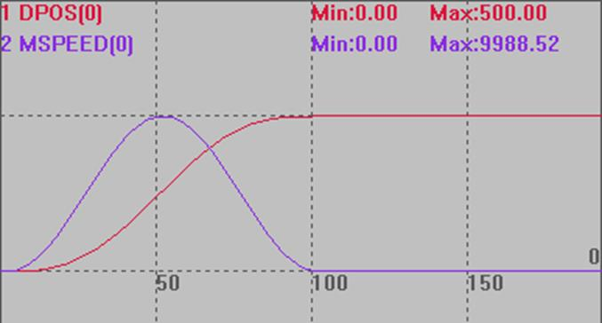
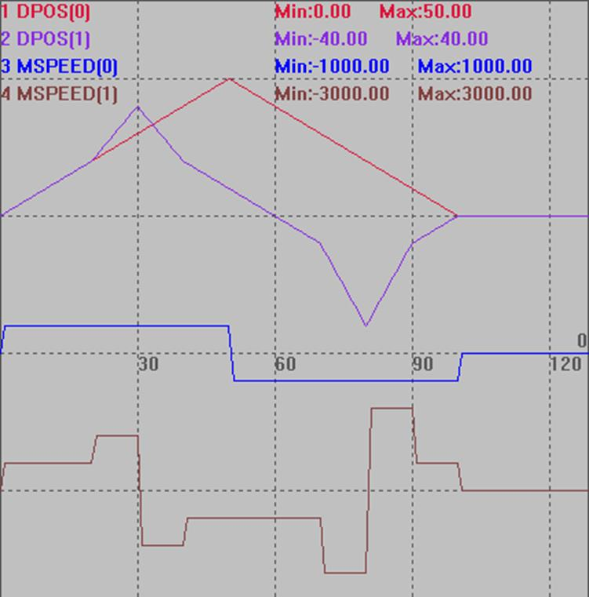
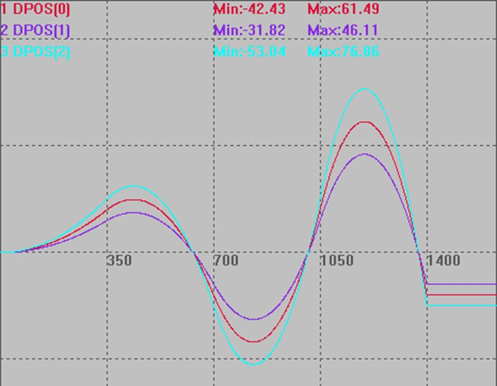

|
类型 |
特殊运动指令 |
|
描述 |
在一段时间内驱动电机运动到某个位置。
一般是PC每个周期计算好对应的坐标，然后传给控制器。 运动时的速度=(DIS/TICKS)*1000 units/s。 不要在极短时间运动大距离，脉冲频率会过高，电机堵转，可以分解成小段，重复发送。 |
|
语法 |
MOVE_PTABS(ticks,dis1,dis2,…) ticks：时间的伺服周期个数 dis1：运动的绝对位置 |
|
适用控制器 |
通用 |
|
例子 |
例一 BASE(0,1) DPOS=0,0 MOVE_PTABS (3, 20,20) '3tick时间内运动到到20,20 WAIT IDLE PRINT *DPOS '打印结果，20,20
例二 RAPIDSTOP(2) WAIT IDLE(0)
BASE(0) ATYPE=1 UNITS=100 SPEED=100 ACCEL=1000 DECEL=1000 DPOS = 0
SetSine '调用函数，产生SINE曲线 TRIGGER '自动触发示波器
FOR i=0 TO 100 MOVE_PTABS (1, TABLE(i)) '在1TICK内，运动TABLE距离 NEXT WAIT IDLE(0) PRINT DPOS(0) '打印结果500 END
GLOBAL SUB SetSine() '计算小段位移 LOCAL num_p,scale '变量定义 num_p=100 scale=500 FOR p=0 TO num_p TABLE(p,((-SIN(PI*2*p/num_p)/(PI*2))+p/num_p)*scale) '存储运动参数 NEXT END SUB
DPOS(0)竖直刻度500 MSPEED(0)竖直刻度10000 
例三 RAPIDSTOP(2) WAIT IDLE(0) WAIT IDLE(1) BASE(0,1) ATYPE=1,1 UNITS=100,100 DPOS=0,0 TRIGGER MOVE_PTABS (10,10,10) '10tick时间内运动到绝对位置(10,10) MOVE_PTABS (10,20,20) MOVE_PTABS (10,30,40) MOVE_PTABS (10,40,20) MOVE_PTABS (10,50,10) MOVE_PTABS (10,40,0) MOVE_PTABS (10,30,-10) MOVE_PTABS (10,20,-40) MOVE_PTABS (10,10,-10) MOVE_PTABS (10,0,0) END
DPOS(0)、DPOS(1)竖直刻度50 MSPEED(0)、MSPEED(0)竖直刻度5000 
例四 BASE(0) UNITS = 1000,1000,1000 DPOS = 0,0,0,0 SPEED=10,10,10,10 ACCEL=1000,1000,1000,1000 DECEL=1000,1000,1000,1000 MERGE = ON TRIGGER MOVE_PTABS(350,20,15,25)'在一个周期内，轴0,1,2运行到20,15,25的位置 MOVE_PTABS(350,-20,-15,-25)'在一个周期内，轴0,1,2运行到-20，-15，-25的位置 MOVE_PTABS(350,20,15,25) MOVE_PTABS(350,-20,-15,-25) WAIT IDLE
DPOS(0)、DPOS(1)、DPOS(2)竖直刻度50  |
|
相关指令 |